SOLIDWORKS 钣金教程
1基体法兰特征
钣金概述
•钣金零件是有一块等厚的薄片材料加工形成的。通过各种手段，平板材料被弯曲成形，并最终制造成零件。
•在SOLIDWORKS中，钣金零件是指通过特有功能创建的具有特殊属性的一类零件模型。
钣金设计树
特有的钣金项目：与零件模式下的特征树区别
- 1、切割清单 ：存放切割的钣金实体对象及属性
- 2、钣金：编辑钣金厚度和折弯半径等，以及规格表
- 3、平板型式：储存每一个钣金实体的平板型式
钣金规格表
钣金规格：预定义好可用的钣金材料。定义文件一般在：
1 | ..\SOLIDWORKS程序位置\lang\chinese-simplified\Sheet Metal Gauge Tables |
钣金特征
【钣金草图】
生成钣金零件实体前，一般需要你先绘制钣金草图：
1、可以利用多线段草图作为“截面形状”生成钣金
2、可以利用封闭轮廓草图作为“面区域”生成钣金
【基本法兰】
规定了钣金属性并拉伸出钣金，同时特征树会出来“钣金文件夹”和“基体-法兰”的特征
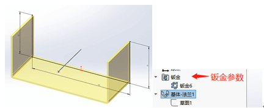【拉伸切除】
对于钣金切割的结构（如冲孔、切割等），我们可以利用## 【草图】绘制切割轮廓，用## 【拉伸切除】方式进行设计。
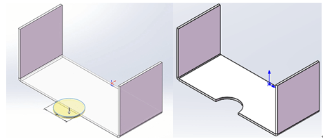（有时在切割斜面时，勾选“正交切除”可以让切口方向垂直于钣金面）
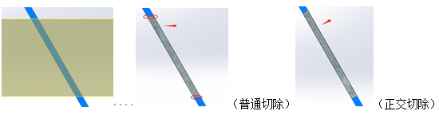【斜接法兰】
斜接法兰允许你绘制特殊的轮廓草图，进行斜接钣金的生成。
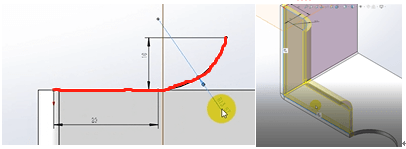【边线法兰】
从边线拉伸折弯
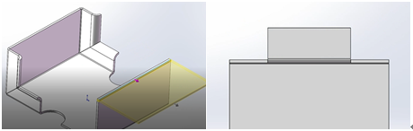可以编辑“边线法兰轮廓”确定钣金的形状。也可以【拉伸/薄片】进行修补。
【绘制折弯】
在原有钣金基础上绘制出折弯效果。
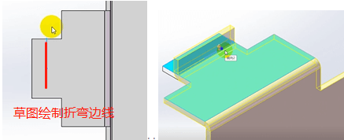【展开】
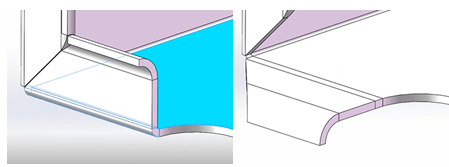【折叠】
在折叠状态下，再进行## 【拉伸切除】进行板材折弯前的轮廓修剪，以获得特殊形状。把前一步的展开给折叠回去；
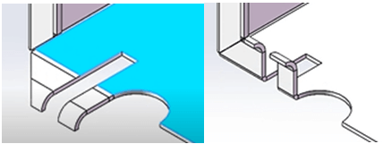【闭合角】
在非垂直折弯的钣金时，钣金转角处会出现空隙。可以用闭合角填补。
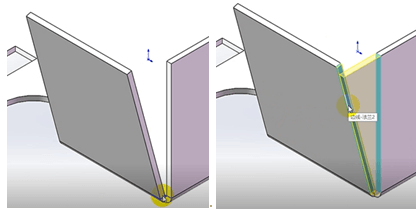【褶边】
将钣金边线进行回卷的特征操作，你可以选择需要## 【褶边】的边线并设置类型参数。
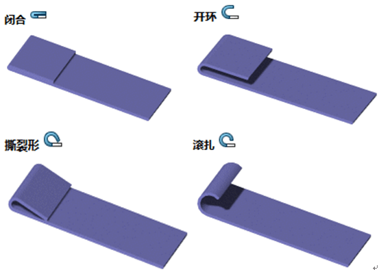 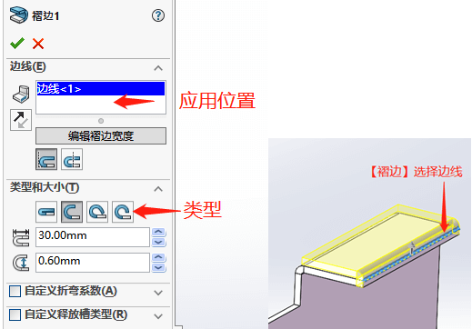【转折】
转折可以实现在一块钣金上利用草图线生成两个折弯。## 【转折】功能要求我们先在折弯面上绘制“折弯线”草图。
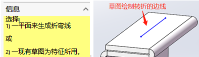进入【转折】编辑窗口，需要我们以绘制的草图线段两侧作为选择，来确定“固定面”。同时你还可以设置其他选项进行不同结果的尝试。
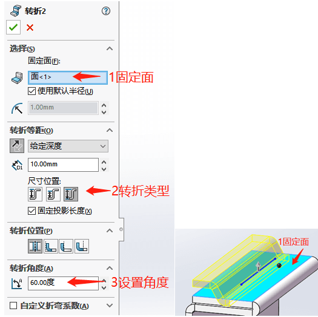2在平板型式下工作
钣金设计通常注重模型的成型状态，平板型式是用于表达零件是怎么生产的；
平板型设置
•1、固定面；展开时那个面保持静止
•2、合并面；折弯的相切边线是否显示
•3、简化折弯；折弯区域的曲线是否简化为直边线
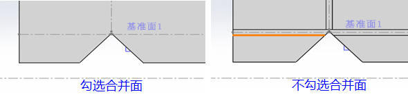4、显示裂缝；【边角释放槽】比折弯区域小时，裂缝用到附加的折弯释放，是否显示该裂缝
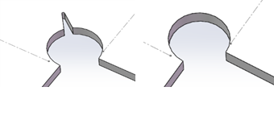5、边角处理；在平板型式中应用平滑边线。（是否允许添加自定义【边角剪裁】特征或是保持原样）
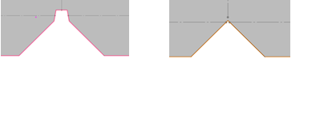6、纹理方向；（选择一条边线或直线设置为纹理的方向，用于确定矩形边界框边线的方向）
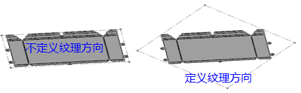7、要排除的面；（在零件展开的平板中不需要被包含的面可以通过平板型式被排除和忽略)
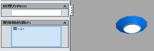生成展平样式
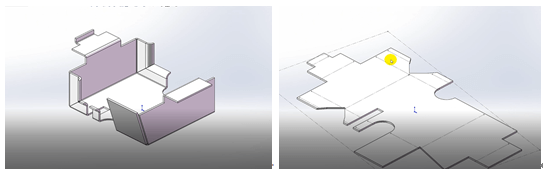切割清单属性
访问和修改切割清单项目属性，切割清单类似于多实体零件的材料单；
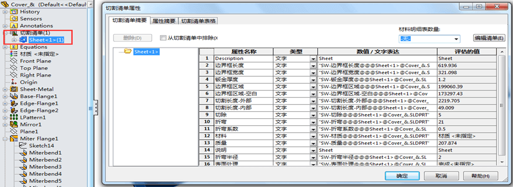展平工程图
钣金切割清单属性、以切割清单属性作注释
零件文档属性
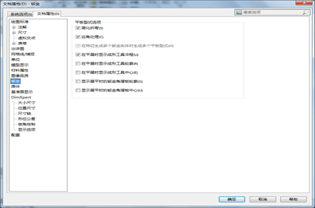工程视图文档属性
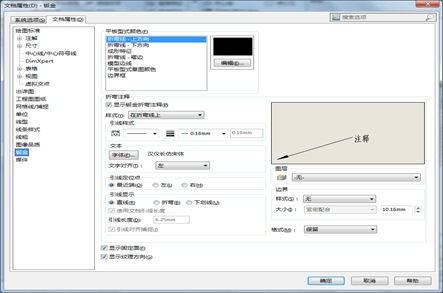焊接切割清单
显示切割清单项目属性；（可自定义列属性）
冲孔表
在钣金零件的工程图视图中，会多一种“展平视图”。该视图会包括钣金展开的信息，并且可以用于“冲孔表”和“折弯系数表”的信息选择来源。
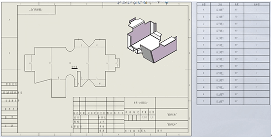在工程图中指定冲孔表的属性，一般“基准点”选择钣金边界框的基准点，“特征”选择钣金展开面
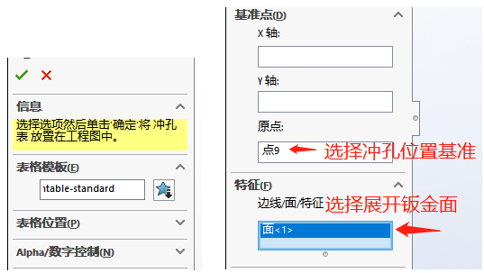 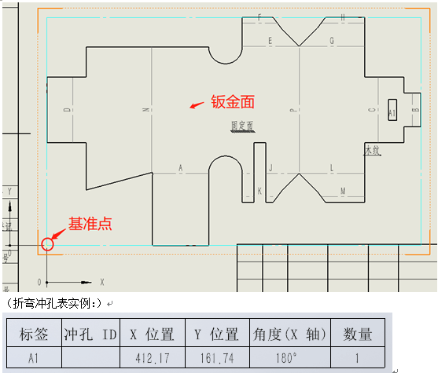折弯系数表
在工程图中指定折弯系数表的属性。
输出DXF格式
1、选择固定面【右键-输出到DWG/DXF】
2、设置输出属性选项
3、预览保存DWG/DXF
加工的特征
- 边角剪裁特征
- 成型状态中的边角
- 闭合角
- 边角释放槽
- 断开的边角/边角剪裁
3其它钣金技术
从展开状态设计
转折特征
绘制的折弯特征。在现有的钣金上添加一个转折或者偏移，该特征也可以称为错接或者等距；
与【绘制折弯】类似，需草图绘制转折线；
（注意：固定投影长度：影响转折后是否保留原有长度，勾选会使材料长料，取消则保持平展的总长不变。）
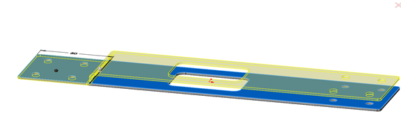展开和折叠
在折叠状态添加特征。已经存在的折弯可以通过【展开】命令被展开，切除特征可以使用到展开的平面上，然后使用【折叠】命令重新折叠折弯；
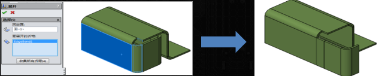 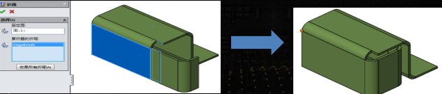扫描法兰
扫描法兰平板型式选项。类似于创建扫描的方法生成的一个法兰，它拥有轮廓和路径草图；
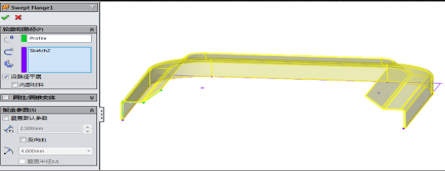放样折弯
成型的放样折弯
-【沿路径平展】特征有一些独特的特征来控制以怎样的方式创建平板型式
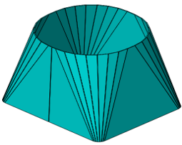通过放样的方法创建钣金零件；
独特的要求：
1）草图中只能包含开环轮廓；
2）轮廓中的缝隙应该和平板型式中的精度保持一致；
3）只允许在两个轮廓间进行放样；
4）不支持引导线；
5）不支持中心线；
折弯的制造方法在零件平坦面间的折弯区域，将被平面铣削为多个折弯；
平面铣削选项
成型折弯区域选项
4钣金转换方法
钣金转换概述
插入折弯方法
转换到钣金
适合标准的、没有薄壁特征的零件。使用从实体上选择的线和面作为折弯边线和折弯面来生成钣金模型；
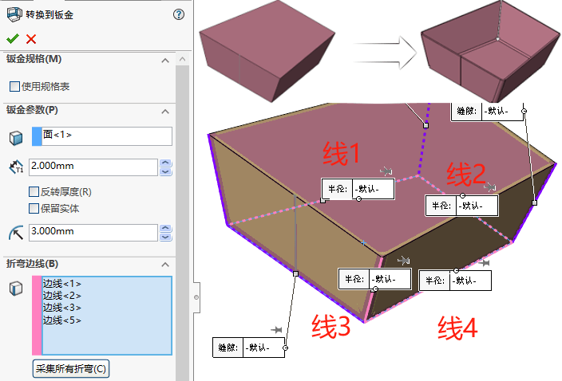（该特征会移除部分特征，例如凸台等成型工具特征）
插入折弯
适合输入的钣金几何体或SOLIDWORKS抽壳零件。定义出折弯系数和默认的折弯半径值，而已经存在的几何体将决定钣金件的厚度，模型中所有的尖锐边角将被默认的折弯半径替代
- 折弯件
1、对需要识别的实体零件，选择固定面；
2、在切口参数处，选择需要断开的切口边线（如上图）；
- 圆柱件
转换圆锥和圆柱
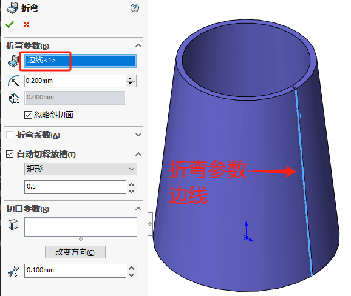5多实体钣金零件
多实体钣金零件概述
带有基体法兰的多实体
多实体钣金参数
多实体的切割清单项目属性
多实体平板视图
切割清单零件序号注释
带多实体的 DXF/DWG格式文件输出
带多实体转换钣金
隐藏和显示实体
在钣金零件中使用分割
多实体阵列
使用边线法兰合并实体行
干涉实体
和其他实体合并钣金零件
6成形工具和角撑板
成型工具
制作
1、 首先您需要准备好成型工具零件（一般为冲压模的冲头零件，如下图：）
2、 在【钣金-成型工具】开启编辑成型工具的“停止面”和“要移除的面”
- 停止面————使用时，在钣金的放置面
- 要移除的面——使用时，在钣金是否开通孔的面
使用
1、 使用时在【设计库-成型工具文件夹】拖放相应的成型工具到钣金表面（停止面）上即可，
2、 具体参数介绍：
a) 方位面：成型工具的放置面（也是停止面）
b) 旋转角度：放置方向的角度
c) 配置：当成型工具有多配置时，可在此处
d) 链接：保持插入目标零件的成形工具与父成形工具零件之间的链接。如果您更新父成形工具，则在您更新目标零件时会将更改延伸到目标零件中的成形工具。
e) 链接-冲孔 ID：分配冲孔 ID。这个到时会在工程图冲孔表显示。
f) 平板形式显示状态：图下图
3、 位置介绍：你需要在 2D 草图画点的方式进行成型工具位置的定位操作，
角撑板
钣金的角撑板
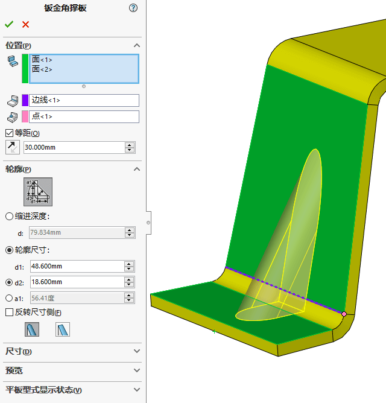这是焊接的角撑板
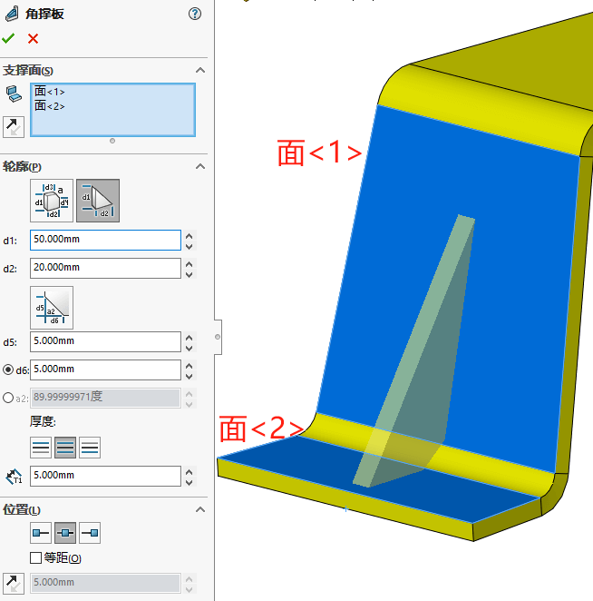7其它钣金功能
交叉折断
交叉折断主要用于大型钣金件中，由于钣金件板材的壁厚较薄，大型钣金件的强度就显得相对薄弱，所以就需要提升板材的刚度，这里就需要用到交叉折断了
交叉折断并不会直接改变模型的形状，它的主要作用是一种注释，标识钣金件的某个位置需要按照指定参数进行加强，在实际生产制造中就会根据图纸的要求对板材指定位置冲出加强筋。
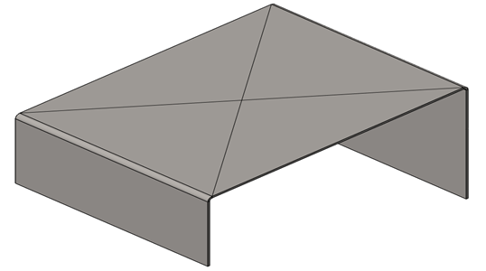通风口
用来创建钣金零件和塑料件上的通风口特征；
该特征需要一个定义了边界、筋和翼梁等通风口特征的草图
加工规划
•通过创建不同的配置特征，能够在工程图中展示不同的成形阶段
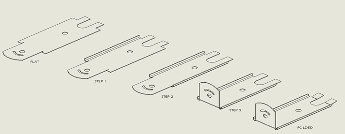